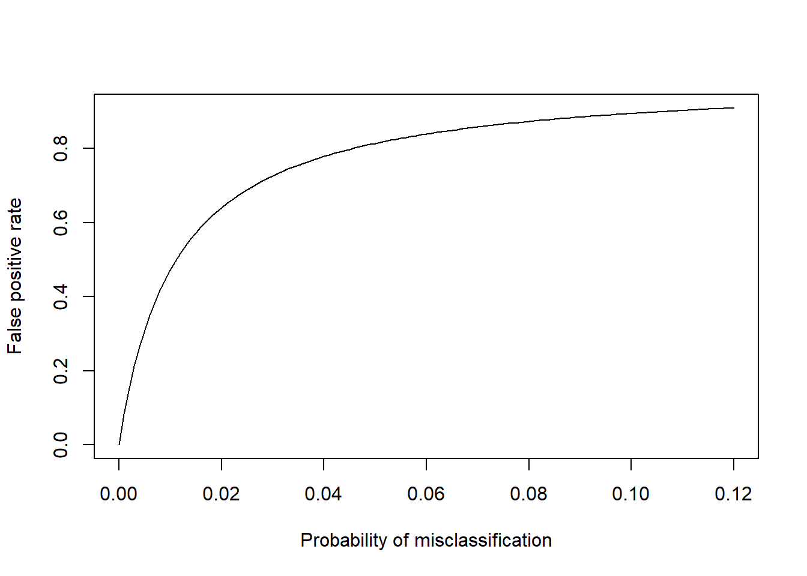

Section 4 Results
Estimates of \(\alpha\) and \(\kappa\) from some of the data sets used in the LUC Tracking project are shown in the table below.
| Data source | \(\alpha\) | \(\kappa\) |
|---|---|---|
| Corine | 0.80 | 0.64 |
| LCC | 0.91 | 0.82 |
| LCM | 0.88 | NA |
For the purposes of the examples below, we use the value of 0.88, the overall accuracy of the LCM, as a relatively optimistic metric. The value of \(p_1 \simeq p_2\) is 1 - \(\alpha\), and therefore = 0.12.
Using this value in Equation yields a probability of estimating erroneous land-use change because of misclassification of 0.226. Because this probability applies at every location on the map, multiplying by the total area yields the expected area of erroneous land-use change. So, when comparing two UK maps which each have a classification accuracy of 88 %, 22.6 % of the area, around 55000 km\(^2\), will show land-use change where none actually occurs. This provides a huge amount of measurement noise when we are attempting to detect a very small signal: the expected magnitude of actual land use change in the UK is of the order of a few hundred km\(^2\), and at most a few thousand km\(^2\), based on Forestry Commission planting rates, Agricultural Census, and urban expansion data. The area of land changing use is thus less than 1 % of the total area, and we would therefore need the probability of misclassification error to be less than this in order to accurately detect true change (meaning the accuracy needs to be > 99 %).
We can extend this to calculate the false positive rates for terms in the \(\beta\) matrix and gross gains and losses, given the appropriate denominators and estimates of the true extent of land-use change. For example, the area of cropland in England is approximately 45000 km\(^2\), and the area of gross gains and losses are estimated to be in the range 300-800 km\(^2\) y\(^{-1}\) based on CS. Based on the June Agricultural Census, we might estimate these rates to be higher, perhaps reaching 1000-3000 km\(^2\) y\(^{-1}\).
Expressing the estimated true land-use change \(A_{true}\) as a fraction of the total recorded land-use change (i.e. true + erroneous), we can calculate the relevant false positive rate, \(F_P\).
\[\begin{equation} \label{eq:falsepos} F_P = 1 - \frac{A_{true}}{A_{true} + A_{false}} \end{equation}\]
If CS rates of land-use change are correct (300-800 km\(^2\) y\(^{-1}\)), the false positive rate is in the range 92.7 to 97.1 %.
If the Agricultural Census rates of land-use change are correct (1000-3000 km\(^2\) y\(^{-1}\)), the false positive rate is in the range 77.2 to 91 %.
Given this relationship between the classification accuracy of individual maps and the resulting false positive rates in detecting land-use change, we can examine the improvement needed to obtain false positive rates below a given level. The figure below shows the change in false positive rate with classification error (1- \(\alpha\)), using the example of cropland gains in England as above, assuming a true rate of change of 1000 km\(^2\) y\(^{-1}\).

The figure shows asymptotic behaviour because of the form of Equation , with a constant true area expressed with an increasing \(A_{false}\) term in the denominator. The result is that it takes a substatial decrease in misclassification (or increase in accuracy) from present values to achieve a marked increase in the false positive rate. For example, to reduce the false positive rate to 0.5 requires an accuracy of 0.988. The basic problem is that the true areas of change are very small compared to current error rates, and it would require an order of magnitude improvement in accuracy to reduce the measurement noise to a similar level to the signal we want to detect.